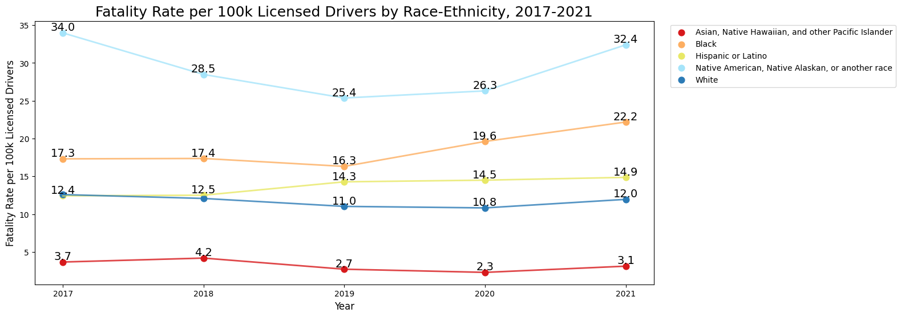

I sometimes enjoy looking at a subreddit called r/dataisbeautiful. Because literally anyone can post on the site, there are often people who create unclear, confusing, or even completely incorrect infographics.
The misleading graph:
This graph depicts the fatality rates by race from the years 2017 to 2021, with AIAN (American Indian and Alaskan Native) most likely to be invovled in a traffic crash, and Asians least likely to be involved in a traffic trash.
Here is the link to the post, titled “[OC] Traffic fatalities by race,” posted on February 13, 2026.
There are multiple items that could be improved in this graph:
Though it shows fatality rate in crashes by race, it does not factor in the total number of drivers per race. Is it possible that Asian people appear to be in the least traffic crashes because they are less likely to have a license?
Most people, including me, would not immediately understand the abbreviations “AIAN” and “NHPI.”
The legend could be placed in alphabetical order, rather than a seemingly random order.
Hispanic or Latino is not a race, but an ethnicity. However, this will be difficult for me to make changes.
It is not color-blind friendly.
Putting Together the Data
Data Frame: Fatality Rate by Race
I first put together the data frame based on the original graph and used the melt function.
I believe that the biggest problem of the original graph is that it only factored in the total population of each race, and not the total number of drivers for each race. For example, it’s possible that the American Indian and Alaskan Natives have a smaller share of driving population compared to its total, which then may overstate the true risk among the total population.
So, my first step is to normalize is by finding data on total number of drivers by race. The best data I could find was here on page 4.
“24% of Hispanic, 21% of Black, 12% of Native American, Native Alaskan, or another race, 9% of Asian, Native Hawaiian, and other Pacific Islanders, and 8% of White voting-age citizens did not have a driver’s license.”
It gave me percentages of those without a driver’s license, so here I created a data frame of unlicensed drivers:
license_data = pd.DataFrame({"Race": ["Asian, Native Hawaiian, and other Pacific Islander","Black", "Hispanic or Latino", "Native American, Native Alaskan, or another race","White"],"Percent Unlicensed": [0.09, 0.21, 0.24, 0.12, 0.08]})license_data.head()
Unfortunately, some of my race categories are different. The table on the left shows Asian and Native Hawaiian or Pacific Islander as two separate races, whereas the table on the right combines it all together. There are also some slight differences in naming the race, such as “American Indian and Alaska Native” on the left vs “Native American, Native Alaskan, or another race” on the right. Without the same race categories, I cannot make the join.
Here is what I did next:
a. Combining “Asian” and “American Indian and Alaska Native” into one
To do this, I decided to edit original_data and combine the two races. I had to find the combined fatality rate by assigning a weight (by population) to each. I found out that the NHPI population in 2020 was approximately 1.6 million, and the Asian population was approximately 19.9 million. I calculated this for Native Hawaiian and Pacific Islanders to have a weight of 0.08 and Asians to have a weight of 0.92. With the help of AI, I was able to combine the two races together into one category.
df = pd.DataFrame(original_data)# Filtering for Asian / Native Hawaiian or Pacific Islanderasian = df[df["Race"] =="Asian"]nhpi = df[df["Race"] =="Native Hawaiian or Pacific Islander"]# Merge by year and compute using weighted valuesmerged = pd.merge( asian, nhpi, on="Year", suffixes=("_asian", "_nhpi"))merged["Fatality Rate per 100k Population"] = ( merged["Fatality Rate per 100k Population_asian"] *0.92+ merged["Fatality Rate per 100k Population_nhpi"] *0.08)# Keeping and renaming needed columnscombined = merged[["Race_asian", "Year", "Fatality Rate per 100k Population"]].copy()combined["Race_asian"] ="Asian, Native Hawaiian, and other Pacific Islander"combined = combined.rename(columns={"Race_asian": "Race"})# Cleaning datacleaned_data = df[~df["Race"].isin( ["Asian", "Native Hawaiian or Pacific Islander"])]cleaned_data = pd.concat([cleaned_data, combined], ignore_index=True)
b. Slight change to “American Indian and Alaska Native” name
cleaned_data["Race"] = cleaned_data["Race"].replace("American Indian and Alaska Native","Native American, Native Alaskan, or another race")cleaned_data = cleaned_data.sort_values(["Year", "Race"]).reset_index(drop=True)cleaned_data.head()
For this step I started off by merging the two datasets by race.
final = pd.merge(cleaned_data, license_data, on="Race")final.head()
Race
Year
Fatality Rate per 100k Population
Percent Unlicensed
Percent Licensed
0
Asian, Native Hawaiian, and other Pacific Isla...
2017
3.3408
0.09
0.91
1
Black
2017
13.6800
0.21
0.79
2
Hispanic or Latino
2017
9.4500
0.24
0.76
3
Native American, Native Alaskan, or another race
2017
29.9000
0.12
0.88
4
White
2017
11.5800
0.08
0.92
Then, I calculated the fatality rate per 100k licensed drivers!
final["Fatality per 100k Licensed Drivers"] = ( final["Fatality Rate per 100k Population"] / final["Percent Licensed"])final["Fatality per 100k Licensed Drivers"] = final["Fatality per 100k Licensed Drivers"].round(2)final.head()
Race
Year
Fatality Rate per 100k Population
Percent Unlicensed
Percent Licensed
Fatality per 100k Licensed Drivers
0
Asian, Native Hawaiian, and other Pacific Isla...
2017
3.3408
0.09
0.91
3.67
1
Black
2017
13.6800
0.21
0.79
17.32
2
Hispanic or Latino
2017
9.4500
0.24
0.76
12.43
3
Native American, Native Alaskan, or another race
2017
29.9000
0.12
0.88
33.98
4
White
2017
11.5800
0.08
0.92
12.59
Step 4: Redesigning the Graph
import matplotlib.pyplot as pltplt.figure(figsize=(14, 6))# Colorblind friendly palettecolors = {"Asian, Native Hawaiian, and other Pacific Islander": "#d7191c","Black": "#fdae61","Hispanic or Latino": "#e8e866","Native American, Native Alaskan, or another race": "#a5e4fa","White": "#2c7bb6"}# lines, dots, labelsfor race in final["Race"].unique(): race_data = final[final["Race"] == race] plt.plot( race_data["Year"], race_data["Fatality per 100k Licensed Drivers"], color=colors.get(race), linewidth=2, alpha=0.8, ) plt.scatter( race_data["Year"], race_data["Fatality per 100k Licensed Drivers"], label=race, color=colors.get(race), s=60, )# resolving overlapping labels:for i inrange(len(race_data)): x = race_data["Year"].iloc[i] y = race_data["Fatality per 100k Licensed Drivers"].iloc[i] race_name = race_data["Race"].iloc[i]ifnot ((race_name =="White"and x ==2017) or (race_name =="White"and x ==2018)): plt.text(x, y +0.3, round(y, 1), fontsize=14, ha="center")import matplotlib.ticker as mtickplt.gca().xaxis.set_major_locator(mtick.MaxNLocator(integer=True))plt.xlabel("Year", fontsize=12)plt.ylabel("Fatality Rate per 100k Licensed Drivers", fontsize=12)plt.title("Fatality Rate per 100k Licensed Drivers by Race-Ethnicity, 2017-2021", fontsize=18)plt.legend(bbox_to_anchor=(1.02, 1), loc="upper left")plt.show()

Surprisingly, the Native American, Native Alaskan or other race increased saw an even larger increase in the fatality rate even after normalizing. Overall, there is an slight increase (1-6) in numbers in all of the races throughout the years after normalization. Additionally, each race’s fatality rate per year remains relatively close each year, with the exception of Native American and Native Alaskan.
Reflection
The original graph was misleading due to normalizing with the total population of each race, instead of the licensed population of each race. Visually, the original graph was not colorblind friendly and had a confusing legend with abbreviations that most people don’t understand. When designing my new graph, I wanted to make sure to handpick the colors using a colorblind friendly website and write out each of the abbreviations. And of course, in Step 2, I tried my best to find data and normalize the population by licensed drivers instead of total population.
This assignment was surprisingly hard for me, and I understand that even my own final graph has its inaccuracies and needs improvement. For example, I tried my best to combine Asian and Native Hawaiian and Pacific Islander into one racial category by weighing the fatality rates (0.08 for NHPI and 0.92 for Asian), but that does not take into account the fluctuations between years. I also wasn’t able to solve the problem of “Hispanic or Latino” since it could double count with other races and I wouldn’t be able to know by how much. Overall, I hope my new graph can share slightly more accurate information than the original graph and be more visually friendly, easy to read, and appealing to all audiences.